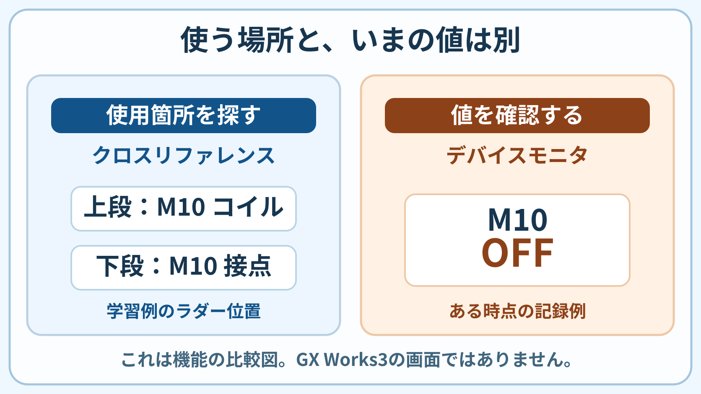
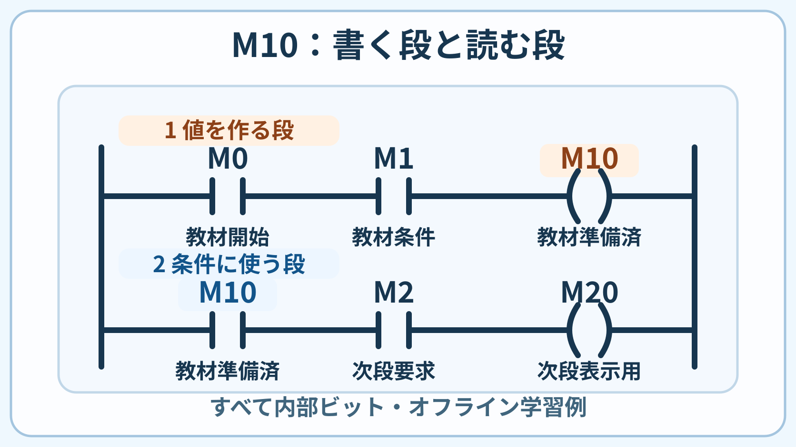

1. 先に結論：値を知るのではなく、使っている場所を探す
内容更新：
「M10がOFFなのは分かった。どこで決まるんだろう？」そんなときに使うのが、GX Works3のクロスリファレンスです。プロジェクト内で対象のデバイスやラベルが使われている場所を一覧にできます。値やON/OFFを見るデバイスモニタとは役割が違います。
同じM10でも、コイルは値を書き込む側、接点は値を条件として読む側。M10が作られない原因を追うなら書込み側、M10が変わるとどこに影響するかを追うなら参照側を先に見ます。

後輩M10が2か所に出ました。どっちを開けばいいですか？

先輩「なぜM10がOFFなのか」なら、まず値を作るコイル側。接点側は、その値を使う先だよ。
PLCのエラーランプが点いた時に見る順番
PLC本体のERR/ALMなどが点いた時に、設備状態、電源、I/O、通信、エラー履歴、復旧前確認の順で落ち着いて確認する基本を整理しています。
2. クロスリファレンスとモニタの使い分け
クロスリファレンスは開いているプロジェクトの使用箇所を探す機能です。使用位置、プログラム名、接点やコイルなどを手がかりに該当箇所へ移れます。一覧は時系列の記録ではなく、どの条件が実際に成立したかも示しません。

一方、デバイスモニタは、監視対象の値を確認するための機能です。たとえば既に採取済みの記録にM10がOFFとあれば、値を作る段はクロスリファレンスで探します。保存してあるプログラムと記録が別の版なら、結果を直接結び付けません。
3. 調べたいことによって、先に読む場所を変える
期待した状態にならない
対象がどの条件で更新されるか、まず書込み側の段と前の条件をたどります。
対象は想定どおりだが、次へ進まない
参照側へ移り、対象のほかに成立すべき条件があるか見ます。信号が次段で読まれた事実と、設備が動いた事実は別です。
変更前に影響を調べたい
参照側を起点に、ほかの工程、インターロック、異常判定、表示へのつながりを洗い出します。
似たコメントが並んでいる
コメントだけで同じ用途と決めず、番号と書込み元・参照先を照合します。
4. M10を探し、書込みの段と参照の段を開く
- 照合するファイルを決める：まず、読む対象のオフラインプロジェクトと版を確認します。
- 対象を絞る：GX Works3の「検索/置換」→「クロスリファレンス」を開き、M10と必要な検索範囲を指定して検索します。表示ラベルやメニューは使用版の資料で確認します。
- 役割で分ける：一覧の使用位置やラダー記号を見ます。必要に応じて読出し・書込みの表示項目も確認し、行をダブルクリックして実際の段へ移ります。
- 前後の条件を読む：書込み側で何がM10を決めるか、参照側でM10以外にどの条件が必要かを読みます。

例では、上段のM0「教材開始」とM1「教材条件」が両方ONのとき、通常コイルがM10「教材準備済」をONにします。下段はM10とM2「次段要求」の両方がONのときだけ、M20「次段表示用」をONにします。M10がOFFなら上段のM0・M1、M10がONなのにM20がOFFなら下段のM2へ。この例でM10を書き込むのは上段だけで、別の書込みがある実際のプロジェクトでは全候補を調べます。
5. Dレジスタも、命令のどちら側かで役割が違う
D100を比較条件に使うなら、値を読む場所です。転送命令 MOV D100 D200 では、D100が転送元、D200が転送先です。MOV D200 D100 ならD100が書かれる側になります。命令名だけで判断せず、比較の左右や転送元・転送先を確認します。
書込みが複数見つかったら
最初に見つけた1か所を原因と決めず、どのプログラムでどの条件のときに更新されるかを整理します。実行順や呼出条件で結果が変わるため、一覧を実行順の証拠にはしません。
6. 変更前は、PLC内の一覧に加えて機器設定も確認
- 対象を書き込む場所と、読む場所を分けて列挙する。
- 他工程、表示、異常判定、インターロックまで参照先を追う。
- 別プロジェクトのGOT画面・アラーム設定や、通信相手の割付も必要に応じて別に照合する。
- 切り戻しが必要な一時処理なら、関係者、承認、版管理・バックアップ・復旧手順を調査結果とは別に確認する。
「クロスリファレンスの結果が1件だった」は、指定した範囲での検索結果です。設備全体に依存先が1つしかないという意味ではありません。
7. 結果が出ないときは、範囲と指定のしかたを見る
対象が見つからないときは、ファイルの版、検索範囲、表示フィルターを確かめます。ラベル名で調べるときは、同名のローカルラベル、割付先デバイスを検索に含める設定にも注意します。
三菱電機の英語版運用マニュアルAS版では、たとえば割付デバイス名からラベル定義を探す際、D0の完全一致でD0Z0に割り付いたラベルは表示されません。これは全機能で間接指定が出ないという意味ではありません。インデックス修飾や配列は、実際の命令・割付・検索条件を使用版の資料と照合します。
使用箇所の確認は、変更許可や安全確認ではない
ここではオフラインのファイルを読むだけです。PLCへの書込み、値変更、強制ON/OFFは扱いません。実機での安全確認・変更・復旧は、設備所定の手順と権限で行ってください。
8. まとめ：一覧で見つけ、ラダーで確かめる
いまの値を確認するのがモニタ、使われる場所を探すのがクロスリファレンス。原因側なら書込み、影響先なら参照を入口にします。最後に該当段の前後や設定と、既に得られている設備の記録を照合します。
メーカー公式資料
公式資料確認：。使用するGX Works3の版に対応する公式資料を優先してください。
- 三菱電機「GX Works3 オペレーティングマニュアル」日本語版 SH-081214：公式配布ページ。PDFの取得にはFAメンバーズへのログインが必要です。
- 三菱電機「GX Works3 Operating Manual」SH-081215ENG-AS：公開英語版。§9.6のデバイス・ラベル、検索範囲、行からの移動、表示条件と、§14.4の現在値確認。
- 三菱電機「MELSEC MXコントローラ プログラミングテクニックガイド」：同社日本語資料のクロスリファレンスのメニュー表記を確認。MX固有機能を他機種に一般化していません。
- 三菱電機「マイクロシーケンサ基礎（iQ-F編）」JY997D68101-E：§4.3.1の通常OUT・a接点の直列条件と、§7.1の転送命令。PDFの取得にはFAメンバーズへのログインが必要な場合があります。記事の学習図は独自作図です。